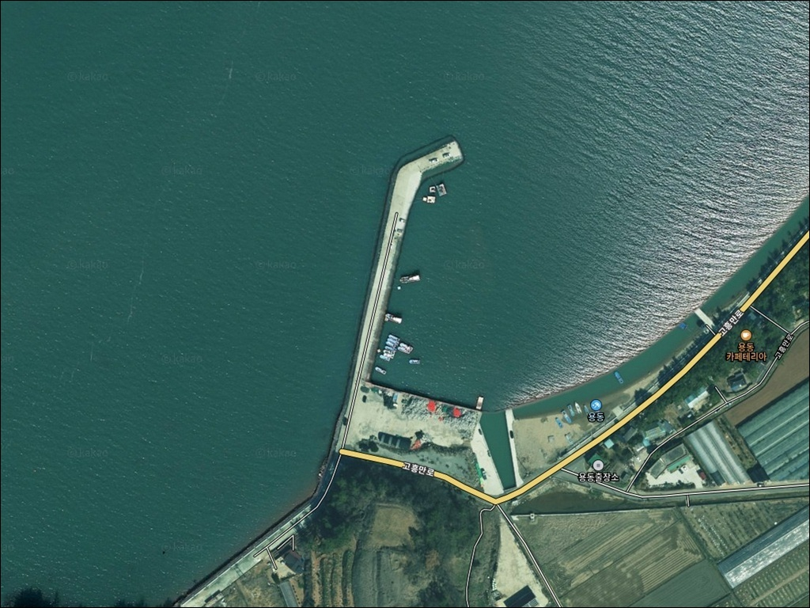
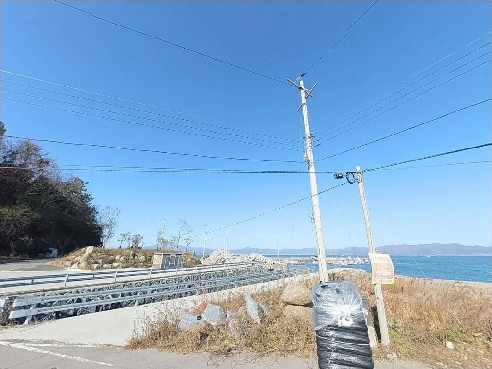
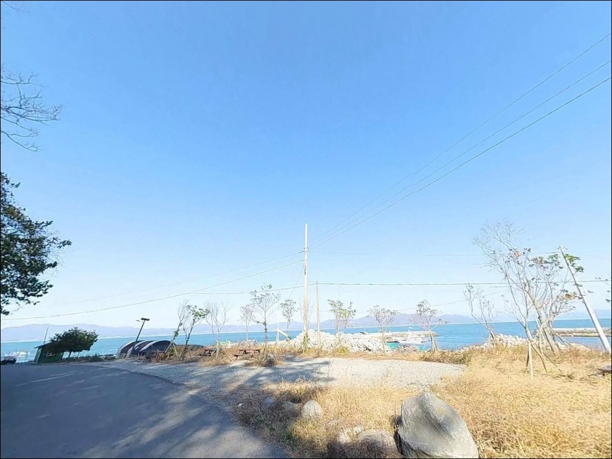
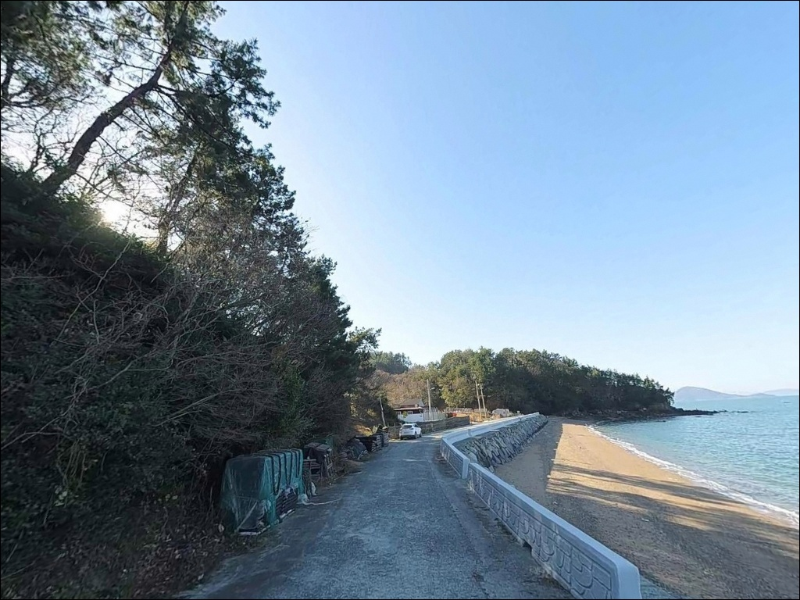
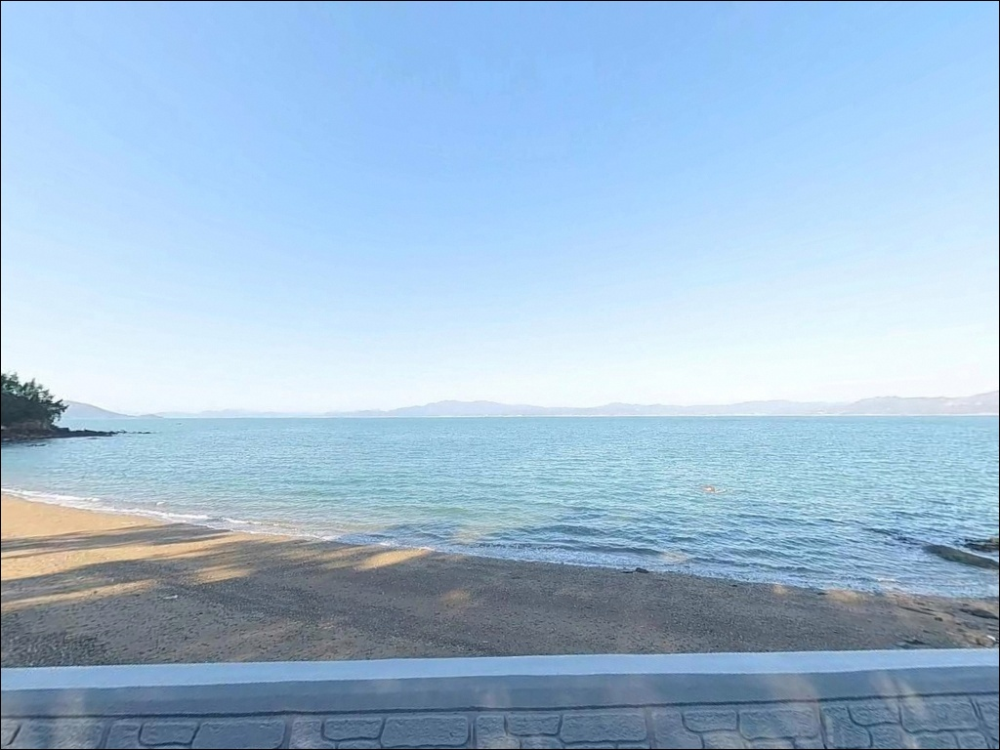
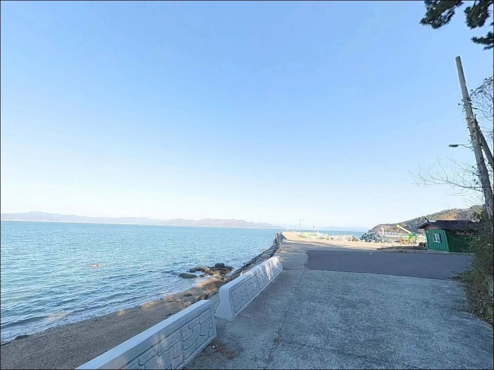
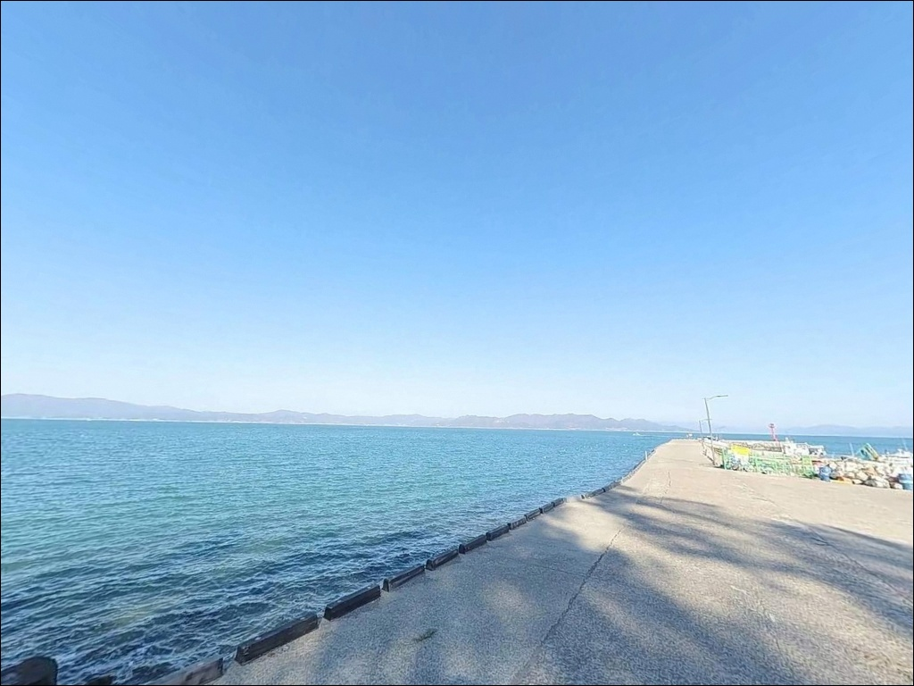
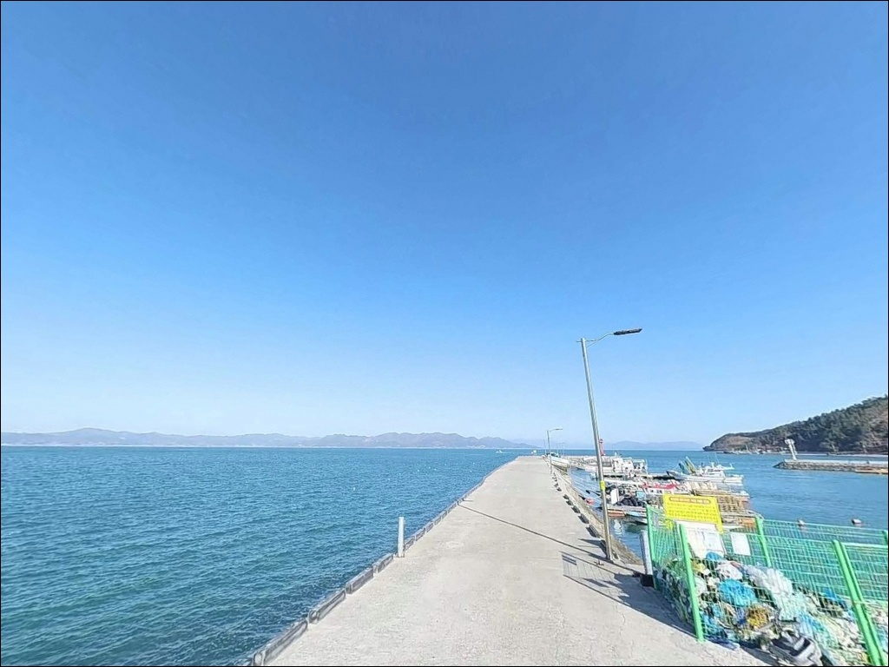
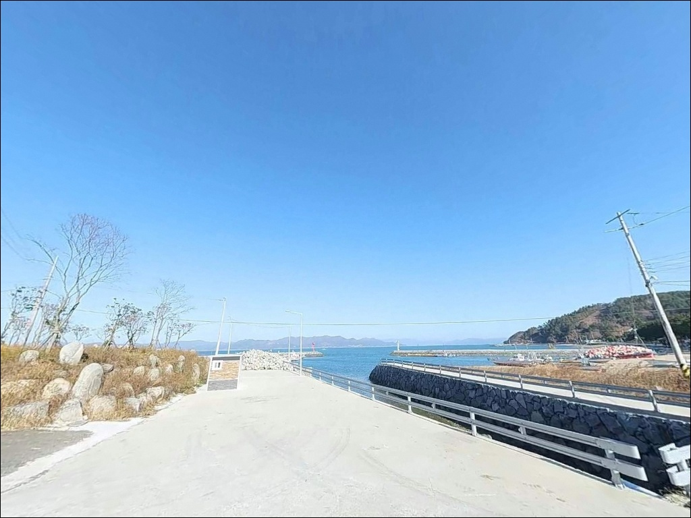

간조에 수심 빠지는 고흥 용동리방파제 들물 차올라야 낚시가 된다
이 페이지에는 광고(제휴 링크 포함)가 있으며, 광고 링크를 통해 구매하면 운영자가 판매 수익 또는 수수료를 받을 수 있습니다. 포인트 사진: 카카오맵 스카이뷰·로드뷰. 이 페이지의 지도·사진 이미지는 카카오맵의 실제 서비스 이미지와 다를 수 있습니다.


포인트 안내
용동리방파제
전남 고흥군 도덕면 용동리 산 344-3
고흥만 방조제 남단에서 용동해수욕장 쪽으로
돌출된 이 방파제는, 조류가 잔잔한 내만 구조 덕분에
채비 운용은 편하지만
간조 시 수심이 급격히 얕아지는 구조로
물때 판단 없이 진입하면 낚시 자체가 어려워집니다.
들물 시작 시각을 먼저 확인하고 출발하는 것이
이 포인트의 기본 조건입니다.
방파제 주변에는 용동해수욕장과
고흥만방조제공원이 인접해 있으며,
낚시 후 야간 체류 공간을 함께 확보할 수 있는
구조라 낚시와 차박을 병행하는 방문자들이
실제로 모이는 장소입니다.
이 글은
용동리방파제의 진입 환경, 낚시 여건,
차박 조건과 대안 동선에 집중합니다.
조황 단정이나 특정 어종 보장은
이 글의 범위에 포함되지 않습니다.

1. 진입 동선과 포인트 접근성
고흥만 방조제는 차량 통행이 가능한
왕복 차선 도로로 연결되어 있으며,
도덕면 방향에서 해안 도로를 따라
직접 접근하는 구조입니다.
방조제 구간 전체가 급경사보다 직선 위주로
이어져 있어 진입 자체의 난이도는 낮은 편입니다.
주차 거점은 두 곳입니다.
용동해수욕장은 약 60대 규모의
공식 주차 공간이 조성되어 있으며,
방파제 진입부 기준으로 도보 이동이 가능한 거리입니다.
고흥만방조제공원에도 별도의 주차 공간이 마련되어 있어
대형 SUV 기준으로도 회차와 주차 모두 무리 없는 수준입니다.
방파제 끝단까지 차량이 진입하는 구조는 아닙니다.
방파제 입구 기준으로 주차 후 도보로 자리를 잡는 방식이 기본이며,
어선 정박 구역과 중복되지 않는 위치를
먼저 확인하고 자리를 잡는 편이 좋습니다.

2. 차박 환경과 야간 체류 여건
용동리방파제 인근에서 차박 거점으로
실제로 활용되는 장소는
고흥만방조제공원 캠핑장 구역입니다.
이미 차박·캠핑 차량이 모이는 장소로 알려져 있으며,
포장 주차 공간과 야간 조명이 확보되어 있어
완전 어둠 속 포인트는 아닙니다.
방조제 구간은 해안 드라이브 코스로 소개될 만큼
도로 조명이 갖춰진 편입니다.
용동리·도덕면 일대는 민가가 해안선을 따라
분포하지만, 방조제와 해수욕장 주변은
개방감이 큰 해안 공간이어서
야간에도 차량 왕래가 완전히 끊기지 않는 분위기입니다.
바람 영향은 내만 구조가 일부 차단해 주는 편입니다.
방조제가 파랑을 추가로 막아주는 구조라
외해 방파제보다 바람과 파도 노출이 적습니다.
낚시를 마친 뒤 조용히 하룻밤 머무는 용도로는
무리 없는 환경입니다.


3. 주변 편의시설 및 인프라 현황
반경 3km 내에서 식사를 해결할 수 있는
식당과 카페가 용동해수욕장 인근에 운영 중입니다.
'솔밭가든'을 비롯한 식당이 이 구간에 자리하고 있으며,
용동리 내에는 소형 편의점도 확인됩니다.
단, 운영 시간은 사전에 확인하는 편이 좋습니다.
용동해수욕장 공중화장실은
여름철 개장 기간에 운영됩니다.
비수기에는 이용이 제한될 수 있어
시즌 외 방문 시 자급 체제 준비가 필요합니다.
차량 연료 보충이 필요하다면
도덕주유소(신양리 방향, 약 7km)를 이용할 수 있습니다.
의약품·대형 마트 등 생활 인프라가 필요한 경우
차량으로 약 15분 거리의
녹동항 일대를 활용하는 것이 현실적입니다.

4. 방문 전 반드시 챙겨야 할 준비사항
이 포인트에서 가장 먼저 확인해야 할 것은
물때입니다.
고흥만 방조제 일대는 내만 구조 특성상
조류 흐름이 완만하지만,
간조 시 수심이 제한되는 구간이 발생합니다.
들물이 시작되는 시간대를 기준으로 출발 시각을 잡는 것이
이 포인트의 기본 전략입니다.
방파제 외항과 끝단 구간은
이끼와 습기로 발판이 미끄러운 경우가 많습니다.
갯바위 신발과 구명조끼는 필수이며,
야간 낚시를 계획하고 있다면
헤드랜턴과 예비 조명을 반드시 챙겨야 합니다.
마을 선착장 성격의 포인트이므로
어선 접안 구역과 그물 건조 구역에
주차나 채비를 펼치지 않는 것이 기본 매너입니다.
출조 전 기상 확인도 빠뜨리지 않는 편이 좋으며,
쓰레기는 전량 수거 후 귀가하는 것을 원칙으로 합니다.

5. 지형 기반 낚시 여건 분석
용동리방파제의 지형적 핵심은
고흥만 방조제 남단에서 돌출된
내만형 소형 방파제 구조에 있습니다.
방조제 안쪽은 평탄한 내만 수역이 형성되어 있으며,
방파제 끝단과 제방 접합부 주변에서
수심 변화가 생기는 구간이 핵심 자리입니다.
바닥 지형은 외항 멀리 사질과 뻘이 섞인 구조이며,
방파제 발밑 인근은 수중 여가 발달해 있습니다.
내만을 향해 열린 구조라 파랑 영향이 적고
채비 운용이 안정적인 편입니다.
다만 내만 특성상 조류 흐름은 완만하여
빠른 조류를 이용하는 방식보다
수심 단차를 노리는 방식이 이 지형에 잘 맞습니다.
릴찌낚시란 릴을 장착한 낚싯대에 찌를 달아
조류를 따라 흘리며 공략하는 낚시 방식입니다.
이 포인트에서는 방파제 콧부리 구간과
꺾임 구간이 릴찌낚시 핵심 자리로 꼽힙니다.
가기 전에 도덕면 방파제 조황을 먼저 검색해 보시기 바랍니다.


6. 이 포인트에 어울리는 낚시 스타일
원투낚시는 이 포인트의 기본 장르입니다.
방파제 외항 수심 단차 구간과 내항 평탄 지형 모두
원투 채비를 운용하기 적합한 조건입니다.
청갯지렁이·홍갯지렁이를 미끼로
들물 시간대에 던져두는 방식이 효율적이며,
도다리·붕장어 계열 어종을 기대할 수 있는 해역 패턴입니다.
릴찌낚시는 방파제 콧부리와 꺾임 구간을
중심으로 운용합니다.
이 해역에서 감성돔과 학꽁치 패턴이
함께 노출되는 구조이며,
특히 가을철 감성돔 씨알이 올라오는
시기에 집중도가 높아지는 편입니다.
상층 1~2m를 노리면 학꽁치 반응도 기대할 수 있습니다.
에깅도 이 포인트에서 유효한 스타일입니다.
에깅이란 갑오징어·무늬오징어를 대상으로
에기(인조 미끼)를 사용하는 루어낚시 방식입니다.
방파제 벽면과 수중 여가 발달한 인근 구간에서
갑오징어 채비 반응이 나오는 해역으로,
봄(4~5월)과 가을(8~11월)이 에깅 시즌으로 꼽힙니다.
방파제 바닥에서 먹물 자국이 있는 구간이
갑오징어가 접근한 흔적이므로,
자리 선정 시 먼저 확인해 두는 것이 좋습니다.
라이트 루어도 병행할 수 있는 구조입니다.
내만 방파제 특성상 볼락·전갱이류 패턴을
야간 소형 지그헤드 채비로 노릴 수 있으며,
방파제 주변 암초 경계를 천천히 탐색하는 방식이 맞습니다.
최신 조황은 출조 전 반드시 확인하십시오.

7. 대안 포인트와 플랜 B 동선
용동리방파제 조건이 여의치 않을 때
가장 가까운 대안은
고흥만 방조제 제방 전 구간입니다.
같은 해역 내만 패턴을 공유하며
원투·찌낚시 스타일을 그대로 적용할 수 있습니다.
방조제 상단 보행이 가능해 자리 선택 폭이 넓고,
고흥만수변노을공원 캠핑장이 인접해
숙박 여건도 함께 해결됩니다.
같은 고흥만 안쪽에 위치한
풍류리 선착장도 플랜 B 포인트로 적합합니다.
생활낚시 위주 구성이 가능한 한적한 환경이며,
용동리방파제에서 이동 거리가 짧아
기상·조류 조건에 따라 빠르게 전환이 가능합니다.
모든 포인트가 여의치 않거나
인프라가 필요한 상황이라면
차량 15분 거리의 녹동항을 기점으로 삼는 방식이 효율적입니다.
녹동항은 고흥 최대 규모의 항구로
낚시 채비 구입, 식사, 연료 보충을
한 동선에서 해결할 수 있습니다.

들물 타이밍을 알면
용동리방파제가 편하게 느껴집니다
원투낚시나 릴찌낚시, 에깅 어느 스타일이든
내만 방파제 구조를 즐기는 낚시인이라면
용동리방파제는 무난하게 맞는 포인트입니다.
채비 컨트롤 부담이 적고
다양한 스타일을 한 자리에서 운용할 수 있어
단일 장르에만 집중하지 않아도 됩니다.
단, 간조 시 수심 제약이 발생하는 구조이므로
물때 확인 없이 현장에 도착하면
낚시 자체가 제한되는 상황을 맞닥뜨릴 수 있습니다.
들물 시간대 기준으로 출발 계획을 세우고,
장비와 자급 준비를 갖춰 간다면
고흥만의 조용한 내만 포인트로서
충분한 출조가 가능합니다.
차박을 함께 계획하는 분이라면
고흥만방조제공원 캠핑장 구역을
거점으로 잡고 낚시와 숙박을 한 동선에서 묶는 방식이
이 포인트를 가장 효율적으로 활용하는 방법입니다.